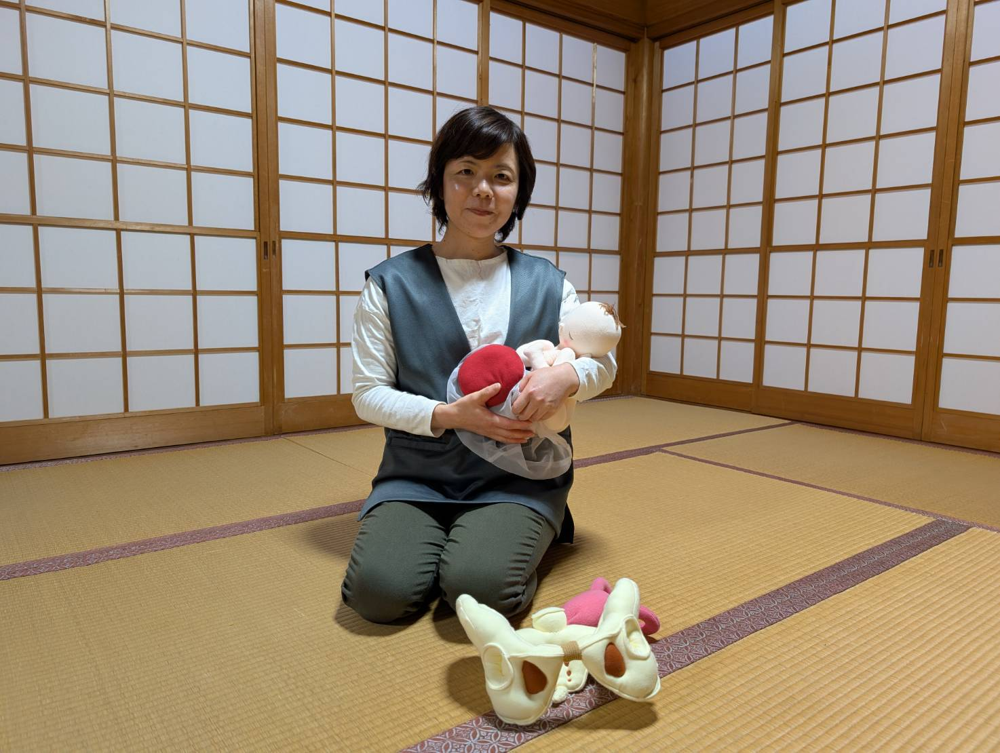

料金案内
講演・講座の料金と、助産師ケアについて。
ご依頼前に知っておきたい内容をご案内します。
- 基本料金
- 90分 20,000円〜
- 交通費
- 別途頂戴します
- お支払い方法
- 口座振込・現金
- キャンセルについて
- キャンセルポリシー（PDF）
MIDWIFERY CARE ／ 助産師ケア人生の節目に、
お寺で暮らし、地域の中で活動しています。
人生の節目に、
そっと寄り添う。
妊娠・出産・育児には、それぞれの想いや悩みがあります。安心して話せること、人とつながれることを大切に、一人ひとりの暮らしに寄り添いたいと考えています。
てらいろは助産院は、2025年4月に開業した出張専門の助産院です。

ケアのご利用について
妊娠中から子育ての時間、
大切な存在とのお別れまで。
まずはお気持ちをお聴きかせください。
- ケアの内容・対象
妊婦相談・授乳相談・育児相談・グリーフケア
妊婦・子育て中の方とそのご家族が対象です。
グリーフケア
大切な存在を失った悲しみに、そっと寄り添います。まずはお気持ちをお聴きかせください。流産・死産を経験された方、新生児・赤ちゃんとのお別れを経験された方を対象としています。
- 料金・所要時間
相談・グリーフケア
1時間 3,000円乳房ケア
1回 5,000円別途訪問料：福知山市内 一律500円
- 訪問先・対応地域
- 福知山市内
- ご利用の流れ
- お電話・メール・InstagramのDMのいずれかでお問い合わせください。
- ご利用前の注意事項
ご予約の前に、利用規約とキャンセルポリシーをご確認ください。